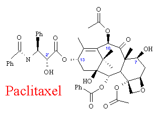
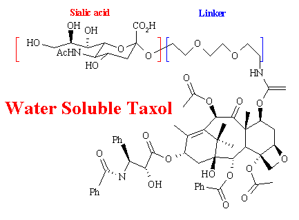

Recent work on Taxol
Because of the taxoids' enormous importance as anticancer drugs, there has been a great deal of interest into these compounds. I have included some of the more interesting examples that I have come across in journals, to give an idea of the areas in which research is being carried out.
Water soluble Taxoids
Both Paclitaxel and Docetaxel are only poorly soluble in water. As a result, a number of groups have been working towards analogues of Taxol that would be fully soluble, yet retain their biological activity.

Previous studies, have shown that the C13 sidechain (including it’s C2’ hydroxy group), is essential for maintaining Taxol’s anticancer properties. Neither the C7 nor the C10 hydroxy groups are as sensitive. As a result, the search for useful Taxol analogues has been concentrated around changing the functional groups on these sites. An example is the C7 - polyethylene glycol derivative of Taxol (7-PEG Taxol), which has been shown to be highly water soluble and still maintain it’s biological effects. Other examples, are the water soluble ‘Taxol-sialic acid’ hybrids. These are molecules consisting of Paclitaxel linked to a sialic acid group, via a 2-[2-(2-aminoethoxy)]ethoxy ethanol linker (see down). The idea of this odd looking molecule, is that it will act as a pre-drug, being hydrolysied back to Paclitaxel by an enzyme called neuraminidase once in the body. This enzyme is particularly active on the surface of cancer cells.

This molecule has shown to have a solubility of 28 mg/ml but only to be about a fifth as active as Paclitaxel. Full information can be found at Bioorganic & Medicinal Letters 8 (1998) 113-116. Received 15 October 1997(15) and The Journal of Organic Chemistry 1995, 60, pp 331-336(16)
New Delivery Vehicles for Taxol
A major problem with malignant tumours (particularly brain tumours) is the inability to define the edge of the tumour and the presence of transformed but undetected cells in the region. As a result the search is on for some method by which tumour cells can be preferentially ‘picked out’ and treated. A related problem, is that Paclitaxel affects both cancerous and normal cells. This means that it’s dosage is fixed by the maximum amount of the toxic drug, the patient can take. To make matters worse, the traditional oil-based vehicle Cremophore, is also toxic. If there was some method for delivering Paclitaxel straight to the tumour cells and only these cells, then a higher and more effective dosage could be used.
One possible method is the use of lipid coated microbubbles (LCM). These are microsized bubbles with a lipid skin, consisting of cholesterol esters and trigycerides; and gaseous interior. These bubbles can be synthesised with diameters ranging from 0.8 - 5 micrometers and are stable for several months in vitroand several hours in vivo. They are also nontoxic. Studies have shown that LCM will preferentially aggregate in brain and hepatic tumours but not in the surrounding tissue. In addition, labelling studies have shown that the LCM are internalised into the cells. If Paclitaxel could be incorporated into the LCM, then the targeting specificity of the bubbles would reduce the systemic effects of the drug and remove the need for Cremophore.
Studies have shown that LCM-Taxol does have a preferential anticancer effect and further studies are being completed. Full information can be found at Neurosurgery Vol 40, No 6 June 1997(17)
 Next
Page: Visit the Lair
Next
Page: Visit the Lair
Also: Appendices - Bibliography, Web Links and
definitions.
If you came from the Lair, this should have opened in a new window - just close it to return.